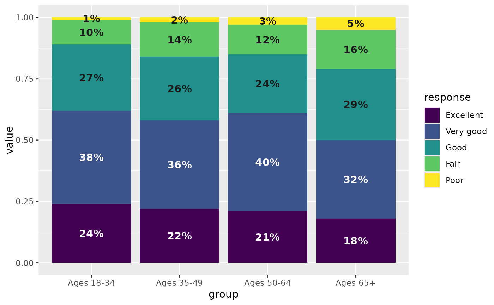
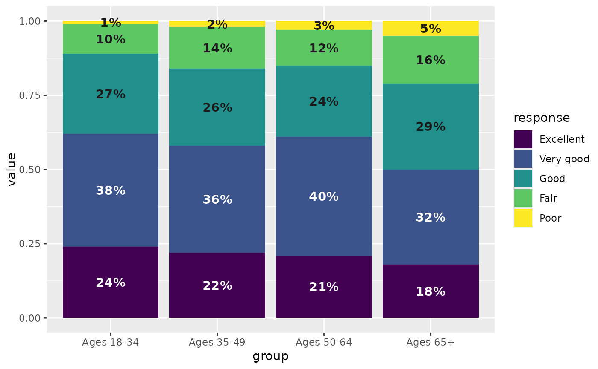

This is a pair of utility functions for a situation that I too often gloss over: when making a chart with different fill colors (such as stacked bars with a sequential palette), it can be good to vary the label color to maintain good contrast between the background and foreground. For example, the ColorBrewer palettes often go from such a dark color to such a light color that black or dark gray labels won't be visible over the darkest bar, and white or light gray labels won't be visible over the lightest bar. This helps prepare for that by testing the contrast between a palette (presumably bar fill colors) and a light and dark option (presumably label text on those bars).
A contrast ratio is calculated by colorspace::contrast_ratio according to the WCAG algorithm, and the minimum ratio defaults to 4.5 based on their accessibility guidelines. If verbose is true and any combination of palette color and label colors fails to meet this minimum, you'll get a message letting you know. For example, using medium gray colors for both dark and light labels is likely to lead to a situation where neither the dark nor the light label color would have enough contrast over the palette.
mutate_contrast takes this a step further, working with a data frame to determine label colors from a factor column (or a column that can become a factor).
Usage
contrast_colors(
pal,
dark = "black",
light = "white",
n = 5,
min_ratio = 4.5,
verbose = TRUE,
labels_only = TRUE,
plot = FALSE
)
mutate_contrast(
x,
col,
pal,
dark = "black",
light = "white",
min_ratio = 4.5,
verbose = TRUE
)Arguments
- pal
String: either a vector of colors (either named R colors or hex codes), or the name of a palette from the
RColorBrewer,rcartocolor, orviridisLitepackages. If the name of a palette, the respective function will be called to fetch the vector of hex codes.- dark
String giving a single valid color to use as the dark label option, either a named R color or hex code. Default: 'black'
- light
String giving a single valid color to use as the light label option, either a named R color or hex code. Default: 'white'
- n
For
contrast_colors, ifpalis the name of a palette, its corresponding palette will havencolors. Ignored otherwise. Formutate_contrast, this is determined by the number of levels incol. Default: 5- min_ratio
Minimum contrast ratio, below which a pair of colors is deemed low-contrast. If
verboseis true and any sets of colors fail to meet this minimum, you'll get a diagnostic message letting you know. Default: 4.5- verbose
Logical, whether to print diagnostic info if there are issues with your contrast ratios, Default: TRUE
- labels_only
Logical, whether to return only labels, i.e. just a vector of the dark or light values, depending on which had the greatest contrast for each color in
pal, or the full data frame used for calculations, including all ratios. Default: TRUE- plot
Logical, whether to print a
ggplotswatch of tiles filled withpaland labels in both the dark and light label colors. For each fill color, the label color with the highest contrast ratio will be starred, although highest might not be above the minimum required. Doesn't change the return value. Default: FALSE- x
A data frame
- col
Bare name of a column in
xalong which the palette will be mapped. If not already a factor, it will be coerced into one with levels in the same order in which they appear.
Value
For contrast_colors: If labels_only, a named character vector of colors, either the value of dark or light, giving the highest contrast ratio for each value of pal. This will be the same length as pal (or n, if you gave pal as the name of a palette to retrieve), and the names will be the fill colors. Otherwise, a data frame with the same number of rows as colors in pal and 6 columns of info about them, including fill and label colors (see examples). For mutate_contrast, the original data frame given as x, with columns added for fill (according to palette) and label color.
Examples
# using a pre-defined palette
qual_pal <- c("#009B9E", "#DAA51B", "#C75DAB", "#898DA7", "#2A39A7")
contrast_colors(qual_pal)
#> #009B9E #DAA51B #C75DAB #898DA7 #2A39A7
#> "black" "black" "black" "black" "white"
# returning a data frame
contrast_colors(qual_pal, labels_only = FALSE)
#> fill dark light max lbl_color low_contrast
#> 1 #009B9E 6.18 3.40 6.18 black FALSE
#> 2 #DAA51B 9.38 2.24 9.38 black FALSE
#> 3 #C75DAB 5.58 3.76 5.58 black FALSE
#> 4 #898DA7 6.43 3.27 6.43 black FALSE
#> 5 #2A39A7 2.24 9.37 9.37 white FALSE
# printing the plot, brewer palette
contrast_colors("YlGnBu", plot = TRUE)
 #> #FFFFCC #A1DAB4 #41B6C4 #2C7FB8 #253494
#> "black" "black" "black" "black" "white"
# not enough contrast, carto palette
contrast_colors("Vivid", n = 7, dark = "gray40", plot = TRUE)
#> ℹ At least one set of colors failed to meet the minimum contrast threshold of 4.5. Consider adjusting the palette and/or using more distinct label colors.
#> • For #E58606, color #1, ratio to `dark` is 2.12; ratio to `light` is 2.71.
#> • For #52BCA3, color #3, ratio to `dark` is 2.48; ratio to `light` is 2.31.
#> • For #99C945, color #4, ratio to `dark` is 2.95; ratio to `light` is 1.95.
#> • For #CC61B0, color #5, ratio to `dark` is 1.61; ratio to `light` is 3.56.
#> • For #A5AA99, color #7, ratio to `dark` is 2.41; ratio to `light` is 2.38.
#> #FFFFCC #A1DAB4 #41B6C4 #2C7FB8 #253494
#> "black" "black" "black" "black" "white"
# not enough contrast, carto palette
contrast_colors("Vivid", n = 7, dark = "gray40", plot = TRUE)
#> ℹ At least one set of colors failed to meet the minimum contrast threshold of 4.5. Consider adjusting the palette and/or using more distinct label colors.
#> • For #E58606, color #1, ratio to `dark` is 2.12; ratio to `light` is 2.71.
#> • For #52BCA3, color #3, ratio to `dark` is 2.48; ratio to `light` is 2.31.
#> • For #99C945, color #4, ratio to `dark` is 2.95; ratio to `light` is 1.95.
#> • For #CC61B0, color #5, ratio to `dark` is 1.61; ratio to `light` is 3.56.
#> • For #A5AA99, color #7, ratio to `dark` is 2.41; ratio to `light` is 2.38.
 #> #E58606 #5D69B1 #52BCA3 #99C945 #CC61B0 #24796C #A5AA99
#> "white" "white" "gray40" "gray40" "white" "white" "gray40"
library(ggplot2)
# For a very small data frame, it's possible to assign label colors with
# `contrast_colors` directly back into the data frame, then use
# `scale_color_identity`.
food <- dplyr::filter(fin_insecurity, question == "food_insecurity",
category %in% c("Greater New Haven", "Age"))
food$lbl_color <- contrast_colors(qual_pal)
ggplot(food, aes(x = group, y = value, fill = group)) +
geom_col() +
geom_text(aes(label = percent100(value), color = lbl_color),
vjust = 1, nudge_y = -0.01, fontface = "bold") +
scale_fill_manual(values = qual_pal) +
scale_color_identity()
#> #E58606 #5D69B1 #52BCA3 #99C945 #CC61B0 #24796C #A5AA99
#> "white" "white" "gray40" "gray40" "white" "white" "gray40"
library(ggplot2)
# For a very small data frame, it's possible to assign label colors with
# `contrast_colors` directly back into the data frame, then use
# `scale_color_identity`.
food <- dplyr::filter(fin_insecurity, question == "food_insecurity",
category %in% c("Greater New Haven", "Age"))
food$lbl_color <- contrast_colors(qual_pal)
ggplot(food, aes(x = group, y = value, fill = group)) +
geom_col() +
geom_text(aes(label = percent100(value), color = lbl_color),
vjust = 1, nudge_y = -0.01, fontface = "bold") +
scale_fill_manual(values = qual_pal) +
scale_color_identity()
 # For a larger data frame, use `mutate_contrast` to get the contrast info
# joined back to your data frame. Since this includes the fill colors, you
# can use `scale_fill_identity`, but this requires putting your legend back in.
health <- dplyr::filter(self_rated_health, category == "Age") |>
mutate_contrast(col = response, pal = "viridis", dark = "gray10")
head(health)
#> # A tibble: 6 × 6
#> category group response value fill lbl_color
#> <fct> <fct> <fct> <dbl> <chr> <chr>
#> 1 Age Ages 18-34 Excellent 0.24 #440154FF white
#> 2 Age Ages 18-34 Very good 0.38 #3B528BFF white
#> 3 Age Ages 18-34 Good 0.27 #21908CFF black
#> 4 Age Ages 18-34 Fair 0.1 #5DC863FF black
#> 5 Age Ages 18-34 Poor 0.01 #FDE725FF black
#> 6 Age Ages 35-49 Excellent 0.22 #440154FF white
ggplot(health, aes(x = group, y = value, fill = fill, group = group)) +
geom_col(position = position_fill()) +
geom_text(aes(label = percent100(value), color = lbl_color),
position = position_fill(vjust = 0.5), fontface = "bold") +
scale_color_identity() +
scale_fill_identity(guide = guide_legend(), labels = levels(health$response))
# For a larger data frame, use `mutate_contrast` to get the contrast info
# joined back to your data frame. Since this includes the fill colors, you
# can use `scale_fill_identity`, but this requires putting your legend back in.
health <- dplyr::filter(self_rated_health, category == "Age") |>
mutate_contrast(col = response, pal = "viridis", dark = "gray10")
head(health)
#> # A tibble: 6 × 6
#> category group response value fill lbl_color
#> <fct> <fct> <fct> <dbl> <chr> <chr>
#> 1 Age Ages 18-34 Excellent 0.24 #440154FF white
#> 2 Age Ages 18-34 Very good 0.38 #3B528BFF white
#> 3 Age Ages 18-34 Good 0.27 #21908CFF black
#> 4 Age Ages 18-34 Fair 0.1 #5DC863FF black
#> 5 Age Ages 18-34 Poor 0.01 #FDE725FF black
#> 6 Age Ages 35-49 Excellent 0.22 #440154FF white
ggplot(health, aes(x = group, y = value, fill = fill, group = group)) +
geom_col(position = position_fill()) +
geom_text(aes(label = percent100(value), color = lbl_color),
position = position_fill(vjust = 0.5), fontface = "bold") +
scale_color_identity() +
scale_fill_identity(guide = guide_legend(), labels = levels(health$response))
 # Alternatively, pull out the palette as a named list and pass that to
# `scale_fill_manual`.
resp_pal <- health |>
dplyr::distinct(response, fill) |>
tibble::deframe()
ggplot(health, aes(x = group, y = value, fill = response, group = group)) +
geom_col(position = position_fill()) +
geom_text(aes(label = percent100(value), color = lbl_color),
position = position_fill(vjust = 0.5), fontface = "bold") +
scale_color_identity() +
scale_fill_manual(values = resp_pal)

# Alternatively, pull out the palette as a named list and pass that to
# `scale_fill_manual`.
resp_pal <- health |>
dplyr::distinct(response, fill) |>
tibble::deframe()
ggplot(health, aes(x = group, y = value, fill = response, group = group)) +
geom_col(position = position_fill()) +
geom_text(aes(label = percent100(value), color = lbl_color),
position = position_fill(vjust = 0.5), fontface = "bold") +
scale_color_identity() +
scale_fill_manual(values = resp_pal)
